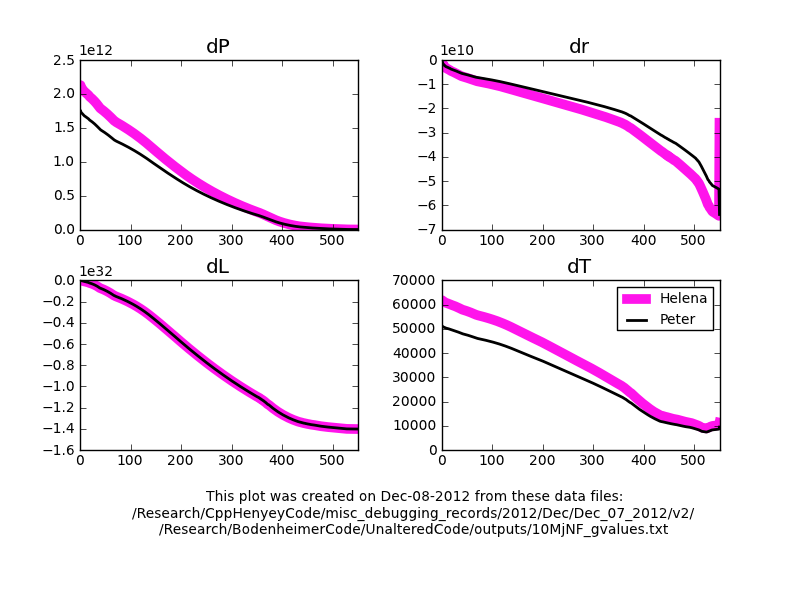
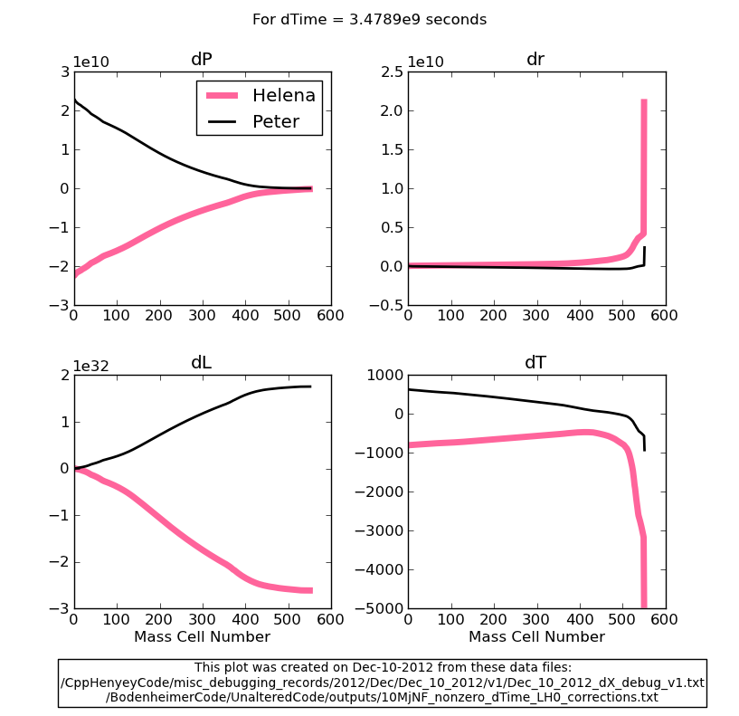

Date & Time: Dec. 10, 2012
Location: Campus
Computing context: /Desktop/Research/CppHenyeyCode, /Desktop/Research/BodenheimerCode/UnalteredCode/
From last time:
Figured out that the way I've been doing the CDE calculations in Helena is backwards. Went ahead and fixed the CDE calculation-order-stuff in my code, and suddenly everything works! See Figure 1.

Comparison of Helena
and Peter dX profiles after I fixed the numerators of the CDE
calculations in Helena. Voila! All the signs agree!
Figure
1:
On getting the outermost HA values to agree perfectly b/w the codes:
--> Looks like the outermost G values differ more b/w codes than the outermost C and D values do.
I don't really think this is a big issue, so I'll move on to the next step of the debugging. However, this mild(?) discrepancy at the outer boundary in the CDEG values is something to keep in mind if problems with my code come to light later on in the debugging process.
Here's the debugging checklist, as it currently stands, and where I am in it right now:
Research and Work Stuff
See
if Peter's code will still converge a 10 Mj no fusion model w/ the
L/H parameter set to zero.
Make
sure both codes now produce the same CDEG profiles, particularly at
the outer boundary / bottom of the atmosphere.
Make
sure that both codes now produce the same P/R/L/T correction
profiles.
Check that Helena successfully converges the 10Mj no fusion model
Compare the converged model to Peter's results
Check that Helena and Peter also produce the same converged model with dTime > 0
Today's work:
Start by
fleshing out the remaining steps on this checklist (on
workflowy.com), and then start doing them.
Updated checklist:
Turn dTime on (set > 0) and compare the results from the two codes
Note on this: there's a whole set of terms that will come into play in the G3J calcs. and associated CDEs once you let dTime > 0
Debug as necessary
Run Peter's code on the 10Mj no-fusion model with L/H = 0, dTime > 0, and make sure it converges (for at least on time step)
If not, debug as necessary
Check that Helena also converges the 10Mj no fusion model for dTime > 0, on a single timestep
Re-enable dX correction application in the Helena code
This means you'll have to re-enable the dX rescaling part of the while-loop code.
Compare the converged models
If they don't agree decently, debug as necessary
Peter's code ends up using
DTIME: 3.4789D+09
when I let it do that "just-use-the-same-dTime-value-that-the-read-in-model-had" thing to determine what dTime value to use.
Set dTime to the same value in AboutThisRun.h for Helena.
Figure 2 = dX profiles from running both codes with this timestep on the 10Mjup, L/H=0 model.

Comparison of the dX
profiles generated by Peter and Helena when dTime = 3.5e9 seconds,
rather than zero. Everything else about the simulations is identical
to the ones plotted in Figure 1.
Figure
2:
Looks like there's some step 1b in my future for tomorrow...